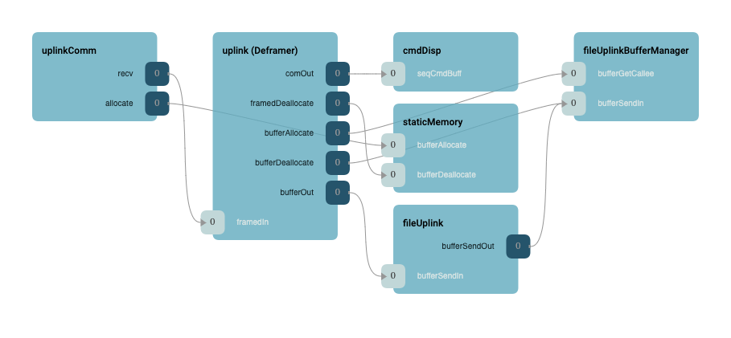
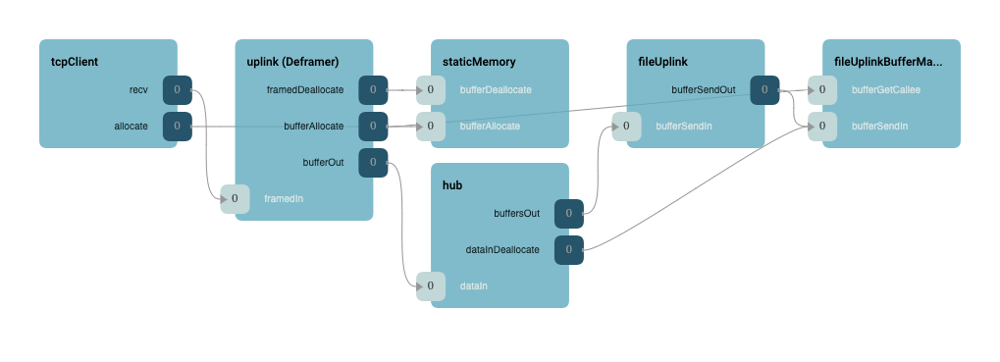
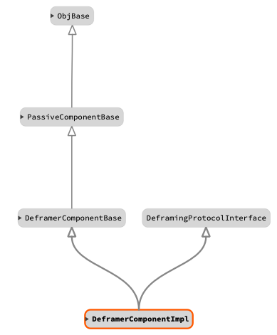

|
F´ Flight Software - C/C++ Documentation
Latest
A framework for building embedded system applications to NASA flight quality standards.
|
|
F´ Flight Software - C/C++ Documentation
Latest
A framework for building embedded system applications to NASA flight quality standards.
|
Deframer takes a stream of bytes from ground, checks the header and footer, and then extracts message data from the stream. The extracted data usually is passed to the service layer (typically CmdDisp, FileUplink, or a GenericHub). The Deframer uses a DeframingProtocol for the same abstraction that the Framer uses FramingProtocol. Deframer is backed by a circular buffer such that incomplete messages are reassembled. It also can be hooked up in two ways:
Note: User should hook up only one of the configurations at a time.
DeframingInstance.size bytes and start at the next message.route call is called-back to the Deframer, it will send the message to the Fw::Com output port of the Fw::Buffer output port based on the specified type in the route call.Fw::Com, it must pass the buffer to the bufferDeallocate port.When Deframer component receives the data from a manager component (typically a service layer such as ground uplinkComm or TcpClient) via polling or a callback, the Deframer will perform the deserialization per DeframingProtocol and will transfer the stream via bufferOut or comOut port to components such as CmdDisp, FileUplink, or a GenericHub.
The following diagram is an example of Deframer usage with and uplinkComm component:

The following diagram is an example of Deframer usage with a TcpClient and GenericHub component:

The following is a typical Deframing setup:

| Name | Description | Validation |
|---|---|---|
| TBD | TBD | TBD |
| Date | Description |
|---|---|
| 2021-01-30 | Initial Draft |
 1.8.17
1.8.17